Lecture 11: Long-Term Financing
Finance Department, ESCP Business School, 2026/2027
First Part: Raising Equity Capital
Equity Financing for Private Companies (Chap. 23.1)
The Initial Public Offering (Chap. 23.2-23.3)
SPACs and the Seasoned Equity Offering (Chap. 23.4-23.5)
Second Part: Debt Financing
Corporate Debt (Chap. 24.1)
Other Types of Debt (Chap. 24.2)
Bond Covenants (Chap. 24.3)
Repayment Provisions (Chap. 24.4)
Mostly based on the BDM textbook Chap. 23 and 24.
Recap lecture 10
A firm with spare cash can give it to shareholders in two ways:
| Dividend | Repurchase | |
|---|---|---|
| What happens | cash paid on every share | the firm buys back some shares |
| Share price | falls by the dividend | stays the same |
| Number of shares | unchanged | falls |
Either way, a shareholder ends with the same wealth: share plus cash in one case, more valuable shares (or cash from selling) in the other.
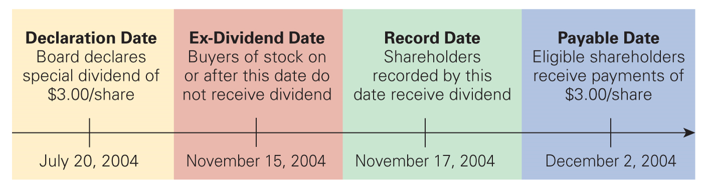
In a perfect market, the price should fall exactly by the amount of dividend paid.
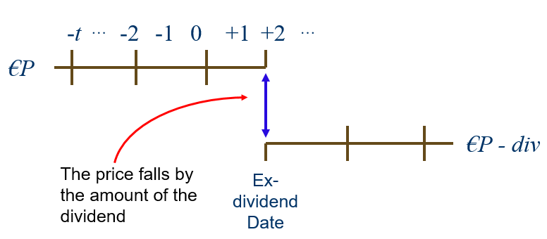
Dividend yield = Annual dividend / Stock price. In words: the cash return you get each year from dividends, per euro invested in the share.
Payout ratio = Cash dividends / Earnings per share. In words: the share of the firm’s earnings paid out as dividends; the rest is retained.
MM dividend irrelevance (1961). With investments fixed, in a perfect market, payout policy does not change the share price. Investors can make their own homemade dividends by selling shares.
Homemade dividends. In a perfect market, investors can create any payout pattern they like by buying or selling shares. So they do not pay more for one policy than for another.
Taxes: where dividends are taxed more than capital gains, repurchases are cheaper for shareholders.
Clientele effects: the tax cost of receiving a dividend rather than a capital gain differs across investors. Those who pay little or no tax on dividends have no reason to avoid them, so each payout policy attracts the investors it suits.
Pay out or retain? Pay out the cash the firm cannot invest in positive-NPV projects. Retained cash costs tax and invites waste, but saves the cost of raising money later.
Dividends. Firms smooth their dividends, so a change is news.
A policy to pay high dividends can be costly if the firm’s finances are not solid.
Hence, an increase in dividends signals that the managers are confident that they can generate high cash flows in the future.
Conversely, a decrease in dividends is a bad signal about the managers’ confidence in the firm’s ability to generate high cash flows in the future.
Share repurchases. Managers can increase the value of the firm by repurchasing undervalued shares, so a repurchase is a positive signal.
Beginning of lecture 11 content
As a firm grows, it changes where it gets its money:
| Stage | Who provides the money | Section |
|---|---|---|
| Start | founders, family and friends | A |
| Young private firm | angels, venture capital | A |
| Going public | many investors, through an IPO | B |
| Public firm | new shares (SPAC, SEO) | C |
| Any stage | loans and bonds | D-G |
At each step, the questions are the same: how much is the firm worth, who gives the money, and what do they get in return (a share of ownership, or a promise to be repaid).
The initial capital that is required to start a business is usually provided by the entrepreneur and the immediate family.
Often, a private company must seek outside sources that can provide additional capital for growth.
Angel investors:
Individual Investors who buy equity in small private firms.
Finding angels is typically difficult.
Venture capital firms:
A VC firm raises a fund from investors (the limited partners: pension funds, endowments, wealthy families) and its managers (the general partners) invest it in start-ups. From the investors’ side:
Offer limited partners advantages over investing directly in start-ups: Limited partners are more diversified and benefit from the expertise of the general partners.
But general partners charge high fees: Most firms charge 20% of any positive return they make (carried interest), and an annual management fee of about 2% of the fund’s committed capital.
Private Equity Firms:
Organized very much like a venture capital firm, but invests in equity of existing privately held firms rather than start-up companies.
May also initiate investments by finding a publicly traded firm and purchasing the outstanding equity, thereby taking the company private in a leveraged buyout (LBO).
What is an LBO? A private equity firm buys all the shares of a company and pays for most of the price with borrowed money, often 60% or more. The debt is then carried by the company itself and repaid out of its own cash flows. The private equity firm puts in only a small slice of equity, so if the company does well its return is large (the leverage effect of Lecture 8); if the company struggles, the heavy debt can push it into financial distress.
Institutional Investors (e.g., pension funds, insurance companies, endowments, and foundations) may invest directly in private firms or indirectly by becoming limited partners in venture capital firms.
Corporate Investors: A corporation that invests in private companies. Although most other types of investors in private firms are primarily interested in the financial returns of their investments, corporate investors might invest for strategic corporate objectives, in addition to the financial returns.
A private firm raises money in rounds (Series A, B, C…). At each round, investors and the firm agree on a value for the firm.
Pre-money value: what the firm is worth before the new money.
Post-money value: what it is worth after, cash included: \[\text{Post-money value} = \text{Pre-money value} + \text{Amount invested}\]
The new investors get a share of the firm equal to what they paid over the post-money value: \[\text{New investors' share} = \frac{\text{Amount invested}}{\text{Post-money value}}\]
This is the “control” question of section A: every round gives away part of the ownership.
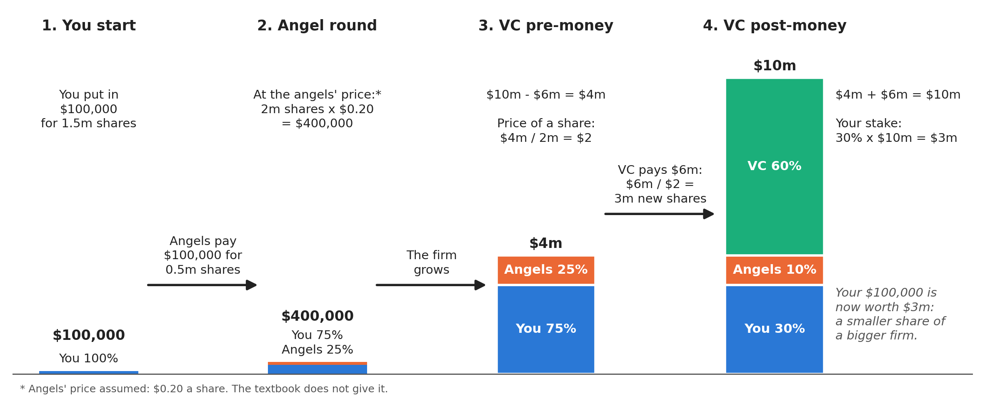
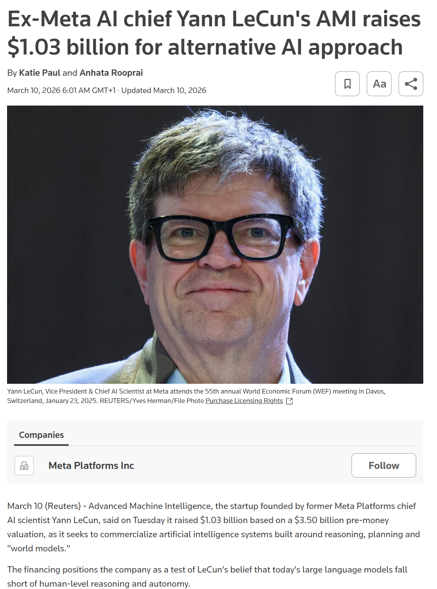
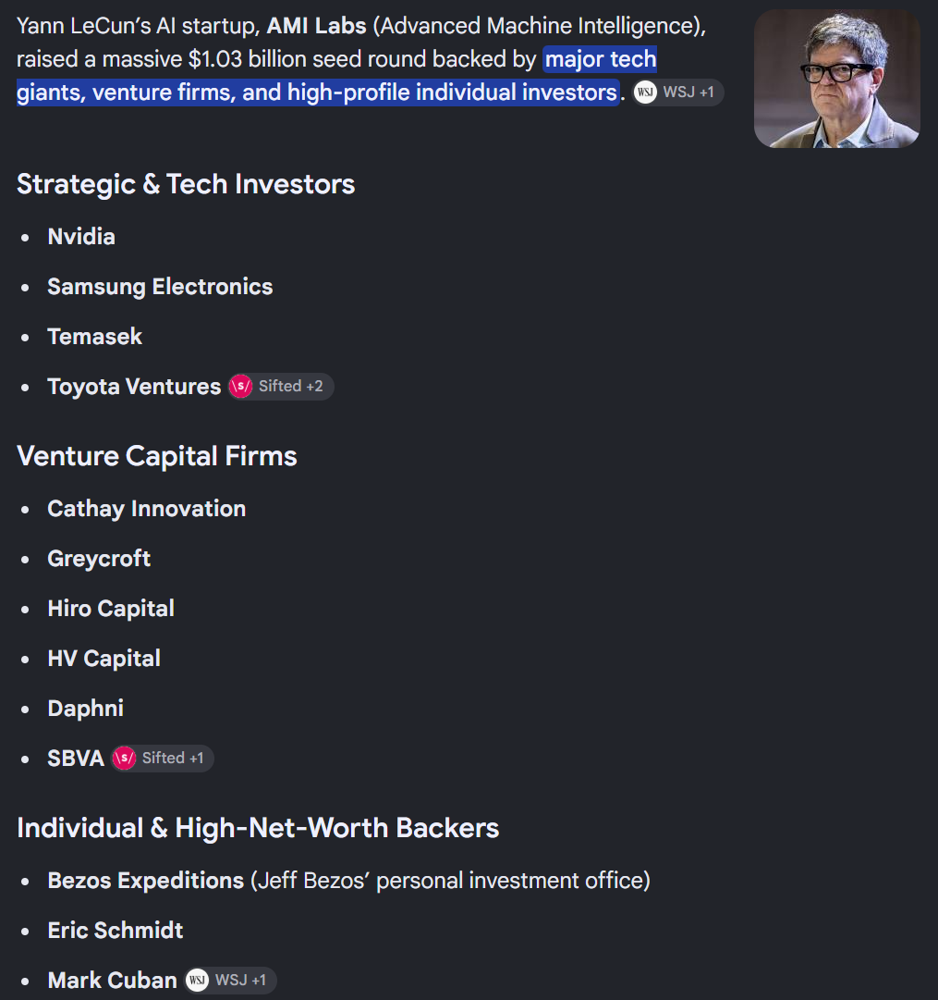
AMI (Yann LeCun’s start-up) raised $1.03 billion at a pre-money value of $3.50 billion (March 2026).
Post-money value: \(3.50 + 1.03 = \$4.53\) billion.
New investors’ share: \(1.03 / 4.53 = 22.7\%\).
Founders and earlier investors keep \(100\% - 22.7\% = 77.3\%\) of a firm now worth $4.53 billion.
Raising money dilutes ownership, but it can make every remaining share worth more: a smaller slice of a much bigger cake.
-Preferences protect investors when the firm does badly.
The process of selling stock to the public for the first time.
Advantages of going public:
Greater liquidity: Private equity investors get the ability to diversify.
Better access to capital: Public companies typically have access to much larger amounts of capital through the public markets.
Disadvantages of going public:
The equity holders become more widely dispersed. This makes it difficult to monitor management.
The firm must satisfy all the requirements of public companies (SEC filings, Sarbanes-Oxley, etc.).
Primary vs. Secondary:
Primary Offering: New shares available in a public offering that raise new capital.
Secondary Offering: Shares sold by existing shareholders in an equity offering.
Best-Efforts vs. Firm Commitment vs. Auction IPOs:
Best-Efforts: For smaller IPOs, a situation in which the underwriter does not guarantee that the stock will be sold, but instead tries to sell the stock for the best possible price. Often such deals have an all-or-none clause: either all shares are sold on the IPO or the deal is called off.
Firm Commitment: An agreement between an underwriter and an issuing firm in which the underwriter guarantees that it will sell all of the stock at the offer price.
Auction IPO: Investors place bids and the IPO price is the highest price such that the number of bids at or above that price equal the number of offered shares.
Who bears the risk of unsold shares? Best efforts: the firm. Firm commitment: the bank (the underwriter).
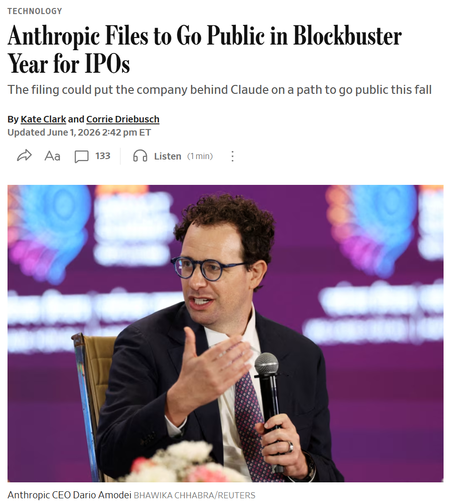
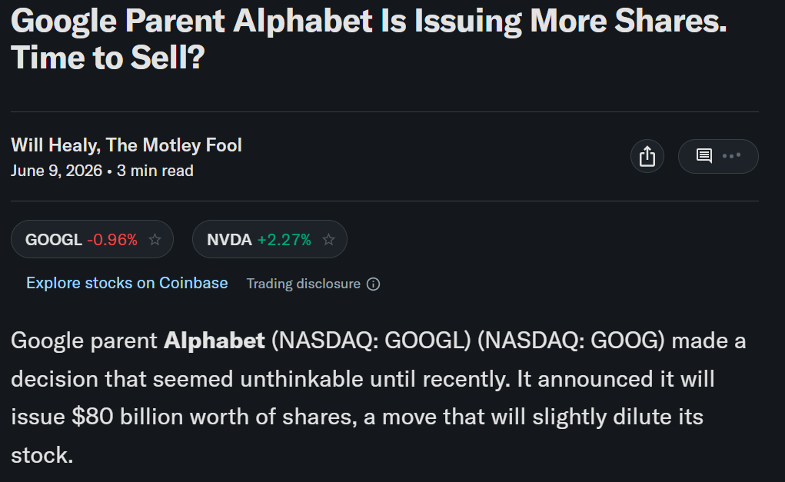
Anthropic (June 2026): files to go public, an IPO: the first sale of its shares to the public. It is a firm commitment offer: about 22 banks, led by Goldman Sachs and Morgan Stanley, buy all the shares and resell them at a price set by bookbuilding.
Alphabet (June 2026): already public, it sells $80 billion of new shares, to pay for AI data centres. Existing shareholders are diluted.
Same tool, new shares, at two stages of a firm’s life.
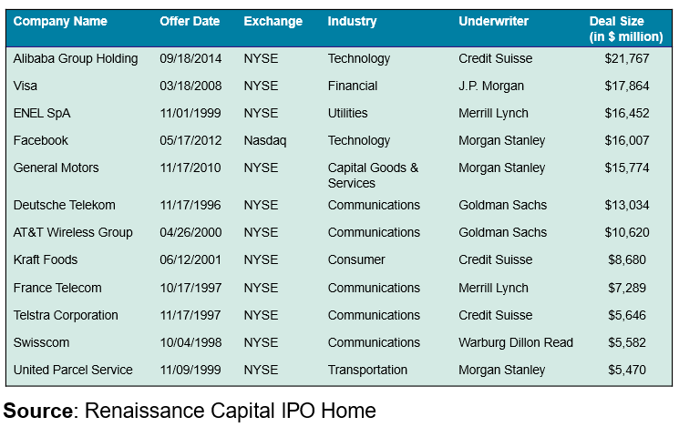
Choose:
Lead Underwriter
Syndicate
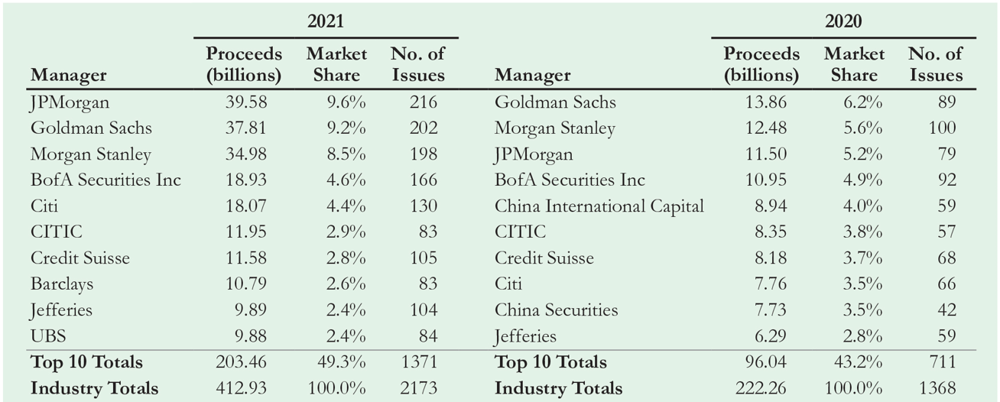
Source: Global Equity Capital Markets Review, 2021
A few large US banks dominate: JPMorgan, Goldman Sachs and Morgan Stanley each led IPOs worth more than $30 billion in 2021.
The top 10 banks handle about half of all IPO money.
Why? A big IPO needs a bank with many large investor clients, to sell all the shares quickly at a good price. Reputation is hard to build, so the same banks win again and again.
Choose the banks: a lead underwriter and a syndicate.
File with the regulator (SEC in the US): registration statement and preliminary prospectus (“red herring”).
Value the firm and set a price range.
Road show and book building: meet large investors, collect their orders.
Set the offer price, final prospectus, shares start trading.
After the IPO: greenshoe option (first 30 days), then the lockup ends (90-180 days).
SEC Filings
Preliminary Prospectus (Red Herring): Part of the registration statement prepared by a company prior to an IPO that is circulated to investors before the stock is offered.
Final Prospectus: Part of the final registration statement prepared by a company prior to an IPO that contains all the details of the offering, including the number of shares offered and the offer price.
Valuation:
Compute the present value of the estimated future cash flows.
Estimate the value by examining comparables (recent IPOs).
Road Show: During an IPO, when a company’s senior management and its underwriters travel around promoting the company and explaining their rationale for an offer price to the underwriters’ largest customers, mainly institutional investors such as mutual funds and pension funds.
Book Building: A process used by underwriters for coming up with an offer price based on customers’ expressions of interest.
Wagner Inc.: sales $320 million, operating profit (EBIT) $15 million, $10 million of cash, no debt, 20 million shares. Similar listed firms are worth on average 21.2 times their EBIT and 0.9 times their sales (Example 23.4).
With EBIT: value of the business \(15 \times 21.2 = \$318\) million; add the cash: $328 million; per share: \(328 / 20 = \$16.40\).
With sales: \(320 \times 0.9 = \$288\) million; plus cash: $298 million; \(298 / 20 = \$14.90\) per share.
The two methods disagree, so the bank proposes a price range, say $13 to $17. The road show and book building then pick the price within it.
Pricing the Deal and Managing Risk
Spread: The fee a company pays to its underwriters that is a percentage of the issue price of a share of stock.
When an underwriter provides a firm commitment, it is potentially exposing itself to the risk of selling the shares at less than the offer price and thus taking a loss. However, research shows that 75% of IPOs experience an increase in share price on the first day (only 9% experience a decrease).
Pricing the Deal and Managing Risk (con’t):
Over-Allotment Allocation (Greenshoe Provision): an option that allows the underwriter to issue more stock, usually amounting to 15% of the original offer size, at the IPO offer price.
Underwriters initially market both the initial allotment and the allotment in the greenshoe provision by short selling the greenshoe allotment.
If the issue is a success, the underwriter exercises the greenshoe option, thereby covering its short position.
If the issue is not a success, the underwriter covers the short position by repurchasing the greenshoe allotment in the aftermarket, thereby supporting the price.
Lockup: A restriction that prevents insiders from selling their shares for some period, usually 90-180 days, after an IPO.
RealNetworks’ IPO (1997): 3 million shares at $12.50, plus a greenshoe of 450,000 shares (\(15\% \times 3\) million).
Spread: the bank paid the firm $11.625 a share and sold at $12.50: \(0.875 / 12.50 = 7\%\) of the price.
Greenshoe: the bank sold 3.45 million shares, 450,000 more than it had.
Success: the price rose to $17.875 on day one. The bank buys the 450,000 extra shares from the firm at $12.50 (the greenshoe option).
Failure (price below $12.50): the bank buys 450,000 shares on the market instead. Its buying supports the price.
Either way, the bank closes its position without a loss.
Underpricing: on average, the price at the end of the first day is well above the offer price. In the US, the average first-day return was more than 17% (1960-2021). RealNetworks: \(17.875 / 12.50 - 1 = 43\%\).
Free money for investors? Not quite: the winner’s curse (Example 23.5).
In 80% of IPOs, demand is 16 times the shares on offer and the price rises 20%. You ask for 2,000 shares but get only \(2000 / 16 = 125\): profit \(125 \times \$15 \times 20\% = \$375\).
In the other 20%, nobody else wants the shares and the price falls 5%. You get all 2,000: loss \(2000 \times \$15 \times 5\% = \$1{,}500\).
On average: \(0.8 \times 375 - 0.2 \times 1500 = 300 - 300 = \$0\).
You get more of the bad IPOs and less of the good ones. Underpricing is what makes ordinary investors willing to take part.
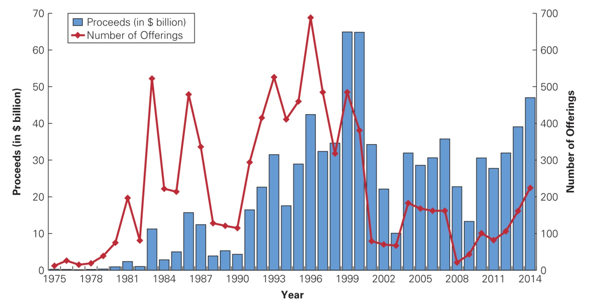
Figure 23.5, Cyclicality of IPOs in the U.S., 1975-2014 (BDM).
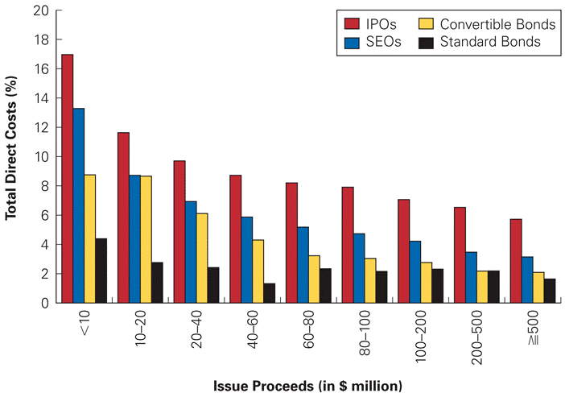
High costs: direct costs as a % of the money raised. IPOs (red) cost the most, about 7% of the money raised for a typical deal, and much more for small ones. Bonds (black) cost the least.
Long-run underperformance: in the years after an IPO, the new shares tend to do worse than the market.
Figure 23.6, Relative costs of issuing securities (BDM).
A SPAC (special purpose acquisition company) is an empty company that goes public first, with a promise: buy a private firm within two years. The private firm then becomes public by merging with the SPAC, with no IPO of its own (Chap. 23.4).
Example: the electric-car maker Lucid merged with the SPAC CCIV in 2021.
Fees: 3.7% of the money raised, about half the 7% of an IPO.
First-day price: $26.83, against an effective price of $9.87 a share: the shares rose 172%.
After the merger, SPAC firms have done badly: on average almost 25% a year below the market. More than a third of 2021 listings were SPACs.
Public firms use SEOs to raise additional equity (Chap. 23.5).
Two kinds of SEOs exist:
Cash Offer: new shares are offered to investors at large.
Rights Offer: new shares are offered only to existing shareholders. \(\Rightarrow\) protects existing shareholders from underpricing and wealth transfer.
Alpha has no debt and only one asset of 100 EUR. Its capital consists of 50 stocks (with a unit value of 2 EUR).
Alpha announces the issuance of 50 new stocks at a price of 1 EUR. The low price guarantees the success of the increase in capital.
After the operation, the company has 150 EUR in assets and its liability side consists of 100 shares.
The price of a stock is thus 1.50 EUR.
The previous shareholders have thus lost 50 cents, which is the gain of the new shareholders.
| Before | After the issue | |
|---|---|---|
| Assets | 100 EUR | 100 + 50 = 150 EUR |
| Number of shares | 50 | 50 + 50 = 100 |
| Price per share | 100 / 50 = 2 EUR | 150 / 100 = 1.50 EUR |
Old shareholders: 50 shares worth \(50 \times 2 = 100\) EUR before, \(50 \times 1.50 = 75\) EUR after. They lose 25 EUR.
New shareholders: pay \(50 \times 1 = 50\) EUR for shares worth \(50 \times 1.50 = 75\) EUR. They gain 25 EUR.
Selling shares below their value moves wealth from old to new shareholders.
If Alpha instead decides to do a rights offer, each existing shareholder receives the right to purchase an additional share for 1 EUR.
If all existing shareholders exercise their right, the value of the company is 150 EUR and the liability side of the company consists of 100 shares with a unit value of 1.50 EUR (the stock price has thus decreased by 50 cents).
But existing and new shareholders are the same so the loss of 50 cents per stock is compensated by the profit on the new shares.
In numbers: together, the old shareholders had 100 EUR of shares and 50 EUR of cash = 150 EUR. After: 100 shares \(\times\) 1.50 = 150 EUR. No loss: the 25 EUR stays with the same people.
A firm worth $1 billion has 100 million shares at $10. It needs $200 million (Example 23.8). Two possible rights offers:
| Offer (a) | Offer (b) | |
|---|---|---|
| Terms | 4 rights + $8 buy 1 share | 5 rights + $10 buy 2 shares |
| New shares | 25 million | 40 million |
| Money raised | \(25 \times 8 = \$200\)m | \(40 \times 5 = \$200\)m |
| Price after | \(1{,}200 / 125 = \$9.60\) | \(1{,}200 / 140 = \$8.57\) |
A shareholder with 4 shares and $8 under offer (a): \(4 \times 10 + 8 = \$48\) before, \(5 \times 9.60 = \$48\) after. The same holds under (b).
With a rights offer the issue price only changes how the value is split between old and new shares, not who owns it.
Researchers have found that, on average, the market greets the news of an SEO with a price decline (on average, 3-5 %).
Why?
This can be explained with the signalling and adverse selection theory (Chap. 16):
A company concerned about protecting its existing shareholders will tend to sell only at a price that correctly values or overvalues the firm.
Thus investors infer from the decision to sell that the company is likely to be overvalued. \(\Rightarrow\) Price drop at announcement of SEO.
The share trades at $50. Managers know more than the market about the true value.
If they know the true value is $60, selling new shares at $50 would give away value to new buyers: they do not issue (they borrow or wait).
If they know the true value is $40, selling at $50 is a good deal for the old shareholders: they issue.
So an announced SEO tells investors that the true value is probably closer to $40: the price falls on the announcement.
Same logic as Lecture 10: a repurchase suggests the share is cheap, an issue suggests it is expensive.
But adverse selection cannot be the whole story:
A rights issue mitigates the adverse selection problem. However, the stock price decreases even in that case.
In addition, as for IPOs, after an SEO the stock price tends to underperform the market. This suggests that the price decrease at the announcement is insufficient, because prices continue to decline thereafter.
Corporate Debt (Chap. 24.1)
Other Types of Debt (Chap. 24.2)
Bond Covenants (Chap. 24.3)
Repayment Provisions (Chap. 24.4)
Characteristics of a debt security:
Face value
Issue price
Coupon rate (fix, variable, indexed, ...)
Coupon payment dates
Maturity
In 2005 the car-rental firm Hertz issued, among others, this bond:
| Characteristic | Value |
|---|---|
| Face value (total) | $1.8 billion, in bonds of $1,000 |
| Issue price | 100% of face value (at par) |
| Coupon rate | 8.875% a year, fixed |
| Coupon payment dates | every six months |
| Maturity | 2014 |
Each $1,000 bond pays \(8.875\% \times 1000 / 2 = \$44.38\) every six months, and $1,000 back in 2014.
A bond issued below face value is an original issue discount (OID) bond: part of the return comes from the price rising to face value.
Private debt: not publicly traded; larger aggregate market than the public debt market. Avoids cost of registration but has the disadvantage of being illiquid. Two segments:
Term loans: fixed term bank loans.
Private placements: bond issue that does not trade on a public market and is sold to a small group of investors.
Public debt: publication of a prospectus, which specifies the details of the offering, and includes an indenture (formal debt agreement between issuer and bondholder).
Private debt example:
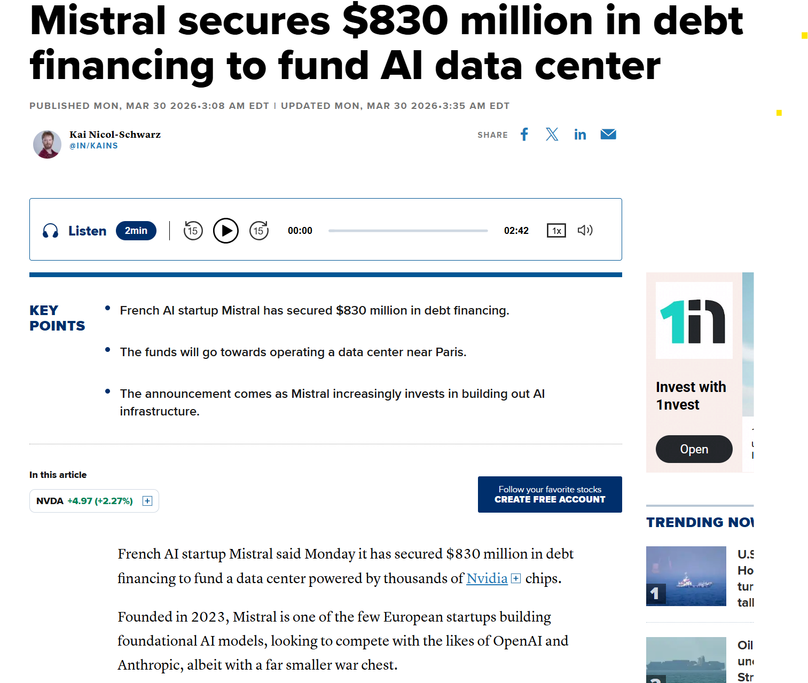
Public debt example:
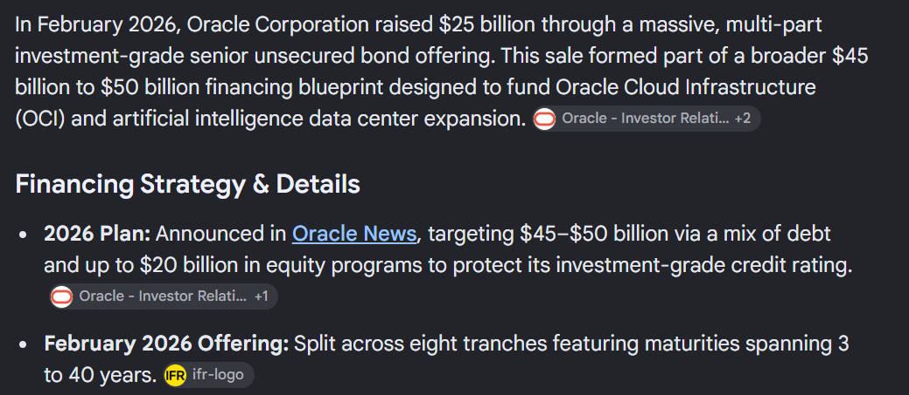
Mistral (March 2026): $830 million of private debt from a group of lenders, to build a data centre near Paris. Quick and confidential, but the loan cannot be sold on a market.
Oracle (February 2026): $25 billion of public bonds, in eight parts with maturities from 3 to 40 years. Sold to thousands of investors and traded on the market, but it needs a prospectus and a credit rating.
A young firm borrows privately; a large, well-known firm can tap the public market for much bigger amounts.
Most types of corporate bonds—notes (maturity less than 10 years) and debentures—are unsecured.
Thus the bondholder’s priority in claiming assets in the event of default—the bond’s seniority—is important.
In exchange for more risk, the investors of junior debt are promised higher yields.
If the firm defaults, its assets are shared out in this order:
Secured debt: backed by specific assets (a building, the car fleet). Mortgage bonds and asset-backed bonds.
Senior unsecured debt: notes and debentures with no specific asset, paid before other debt.
Subordinated (junior) debt: paid only after senior debt.
Shareholders: paid last, with what is left.
Hertz (2005): its senior notes paid 8.875%, its subordinated notes 10.5%. The lower in the line, the higher the interest rate.
Sovereign debt: debt issued by national governments.
An expanding market, thanks to the increase in public deficits
In France, the public debt at the end of 2025 amounted to 115.6% of the GDP, or 3,460.5 billion EUR.
Up from 112% of GDP and 3,228 billion EUR a year earlier: an increase of 232.5 billion EUR in a single year.
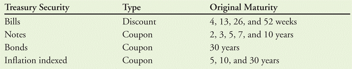
The US government borrows at every maturity:
Bills: up to one year, no coupon. You buy below face value and get the face value at maturity.
Notes: 2 to 10 years, with coupons.
Bonds: 30 years, with coupons.
TIPS: protected against inflation (next slide).
These yields are the “risk-free rates” used throughout the course (CAPM, Lecture 4): other borrowers pay a spread above them.
An inflation-indexed bond issued by the U.S. Treasury with maturities of 5, 10, and 20 years. They are standard fixed-rate coupon bonds with one difference: The outstanding principal is adjusted for inflation.
Example:
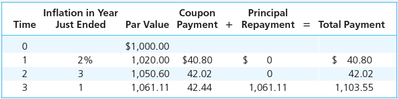
A 3-year TIPS with face value $1,000 and a 4% coupon.
Step 1, the principal follows inflation:
Year 1, inflation 2%: \(1000 \times 1.02 = \$1{,}020\).
Year 2, inflation 3%: \(1020 \times 1.03 = \$1{,}050.60\).
Year 3, inflation 1%: \(1050.60 \times 1.01 = \$1{,}061.11\).
Step 2, the coupon is 4% of that principal: $40.80, $42.02, $42.44.
Step 3, at maturity the investor gets back the adjusted principal: \(1{,}061.11 + 42.44 = \$1{,}103.55\).
The investor’s money keeps its purchasing power, whatever inflation turns out to be.
Securitization transforms assets in financial securities that can be traded on financial markets.
The largest sector of the asset-backed security market is the mortgage-backed security market (i.e., assets backed by home mortgages). \(\Rightarrow\) Mortgage-Backed Securities.
Collateralized Debt Obligations (CDO): A re-securitization of other asset-backed securities + Often division into tranches that are assigned different repayment priority.
A pool of loans worth $100 million is split into three tranches, paid in order:
| Tranche | Size | Paid | Loses money |
|---|---|---|---|
| Senior | $70m | first | last |
| Mezzanine | $20m | second | second |
| Equity | $10m | last | first |
Suppose borrowers default and the pool loses $15 million:
the equity tranche loses all its $10 million;
the mezzanine tranche loses the other $5 million (a quarter of it);
the senior tranche is paid in full.
The same pool creates safe and risky securities. In 2008, losses were so large that even “safe” tranches lost money.
Restrictive clauses in a bond contract that limit the issuers from undercutting their ability to repay the bonds.
For example, covenants may
Restrict the ability of management to pay dividends
Restrict the level of further indebtedness
Specify that the issuer must maintain a minimum amount of working capital
If the issuer fails to live up to any covenant, the bond goes into default.
Why accept them? Covenants protect lenders against managers taking the cash out or piling on more debt. Lenders feel safer and ask for a lower interest rate.
Issuers can repurchase outstanding bonds in the market before maturity.
The bond can also directly allow for early repayment by including a call provision: callable bonds.
This gives the issuer the right (but not the obligation) to retire all outstanding bonds on (or after) a specific date (the call date) for the call price.
Firms generally call a bond issue if interest rates have fallen.
Issuer can lower its borrowing costs by immediately refinancing at a lower rate.
Note: If rates rise, there is no need to refinance.
A 5-year bond pays an 8% coupon on $100. It is callable at $100 after one year. Interest rates have fallen, and it trades at $103 (Example 24.2).
If it is not called: the investor earns about 7.26% a year for five years (the yield to maturity).
If it is called after one year: the investor gets the coupon and the $100 back, $108 in total, for $103 paid: \[\text{Yield to call} = \frac{108}{103} - 1 = 4.85\%\]
The firm calls exactly when rates have fallen, so the investor must reinvest at the new, lower rates. Investors want a higher yield on a callable bond to accept this.
Another way to repay early: the firm pays money every year into a sinking fund, and a trustee uses it to buy back part of the bonds.
The debt is repaid gradually, not all at maturity. If the fund does not repay everything, the rest is paid at the end in one large balloon payment.
Bonds are commonly sold with options which give the issuer or the investor some additional rights.
Options for the investor
Puttable bonds: Give the holder an option to retire or extend the bond.
Convertible bonds: Can be exchanged for shares of the firm’s common stock.
Options for the issuer:
Has a bond with an option a lower or higher yield than an otherwise identical bond? Why?
An option is worth something to whoever holds it.
Option for the investor (puttable, convertible): the investor gets an extra right, so accepts a lower yield.
Option for the issuer (callable): the firm gets an extra right, so it must pay a higher yield.
This is the FT headline: with rates high in 2023, even top-rated firms issued convertibles to pay a lower coupon, giving investors a chance to become shareholders instead.
A corporate bond with a provision that gives the bondholder an option to convert each bond owned into a fixed number of shares of common stock.
Conversion Ratio: The number of shares received upon conversion of a convertible bond, usually stated per $1000 of face value.
Conversion Price: The face value of a convertible bond divided by the number of shares received if the bond is converted.
Warrant: A call option written by the company itself on new stock
When a holder of a warrant exercises it and thereby purchases stock, the company delivers this stock by issuing new stock.
Convertible debt carries a lower interest rate because it has an embedded warrant.
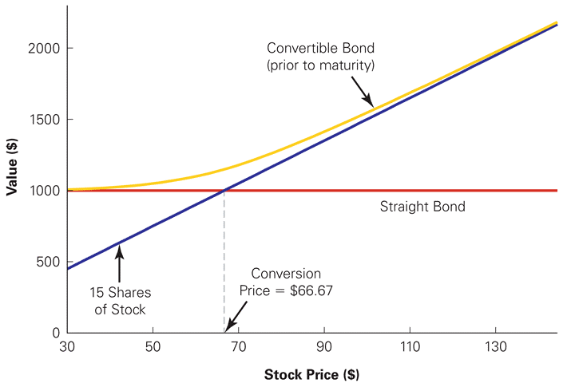
A convertible bond with face value $1,000 and a conversion ratio of 15 shares.
Step 1, conversion price: \(1000 / 15 = \$66.67\) per share.
Step 2, at maturity, the investor picks the better of:
$1,000 in cash (red line, the straight bond);
15 shares (blue line): worth more than $1,000 only if the share is above $66.67.
Step 3, before maturity the convertible (yellow) is worth more than both lines: the investor can still wait and see.
A low share price: it behaves like a bond. A high share price: like the shares.
A. Private firms raise money in rounds. Post-money = pre-money + invested; new investors own invested / post-money.
B. IPO: underwriters, book building, 7% spread, greenshoe, lockup. IPOs are underpriced on average, come in waves and do poorly in the long run.
C. SPACs are a cheaper back door to the market. An SEO sold below value moves wealth from old to new shareholders, unless it is a rights offer. Prices fall on announcement (signalling).
D. Corporate debt: private or public; seniority sets who is paid first and the interest rate.
E. Other debt: sovereign bonds, TIPS (inflation-protected), ABS and CDO tranches.
F. Covenants protect lenders and lower the rate.
G. Options in bonds: callable means a higher yield; convertible and puttable mean a lower yield.
What are some of the advantages and disadvantages of going public?
What is the difference between a cash offer and a rights offer for a seasoned equity offering?
What happens if an issuer fails to live up to a bond covenant?
Why does a convertible bond have a lower yield than an otherwise identical bond without the option to convert?
Going public. Advantages: liquidity for early investors, access to much more capital. Disadvantages: dispersed owners who find it hard to monitor managers, and the cost of public-company rules.
Cash vs rights offer. A cash offer sells to anyone, so a low price moves wealth to new buyers. A rights offer sells only to existing shareholders, so the value stays with them whatever the price.
Covenant breach. The bond goes into default: lenders can ask for their money back or renegotiate.
Convertible yield. The investor also holds an option to become a shareholder (a warrant). That option has value, so the investor accepts a lower coupon.
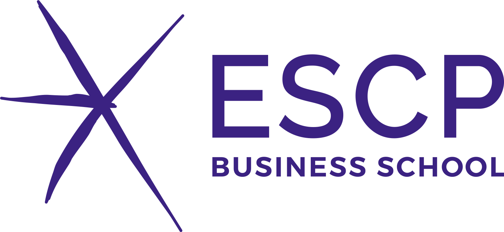
Lecture 11: Long-Term Financing